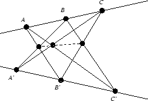
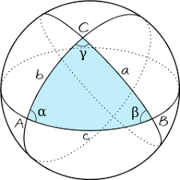
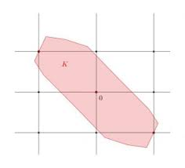
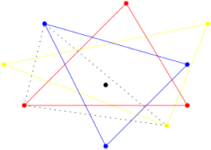

Desde los antiguos griegos, ha existido numerosas contribuciones a la geometría, particularmente a partir del siglo XVIII. Eso ha hecho que proliferen numerosas subramas de la geometría con enfoques muy diferentes. Para clasificar los diferentes desarrollos de la geometría moderna se pueden recurrir a diferentes enfoques:
Los antiguos griegos manejaban un único tipo de geometría, a saber, la geometría euclídea, hábilmente codificada en los Elementos de Euclides por una escuela alejandrina encabezada por Euclides. Este tipo de geometría se basó en un estilo formal de deducciones a partir de cinco postulados básicos. Los cuatro primeros fueron ampliamente aceptados y Euclides los usó extensivamente, sin embargo, el quinto postulado fue menos usado y con posterioridad diversos autores trataron de demostrarlo a partir de los demás, la imposibilidad de dicha deducción llevó a constatar que junto con la geometría euclídea existían otros tipos de geometrías en que el quinto postulado de Euclídes no participaba. De acuerdo a las modificaciones introducidas en ese quinto postulado se llega a familias diferentes de geometrías o espacios geométricos diferentes entre ellos:
A partir del siglo XIX se llegó a la conclusión de que podían definirse geometrías no euclídeas entre ellas:
| Geometrías asociadas a transformaciones | |
|---|---|
| Geometría afín | |
|  | |
| Geometría conforme | |
|  | |
| Geometría convexa | |
|  | |
| Geometría discreta | |
|  | |